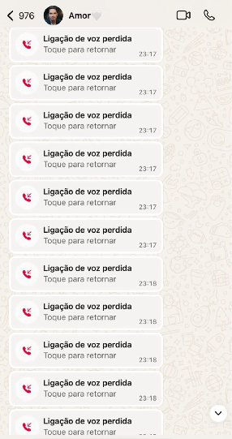
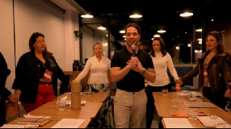
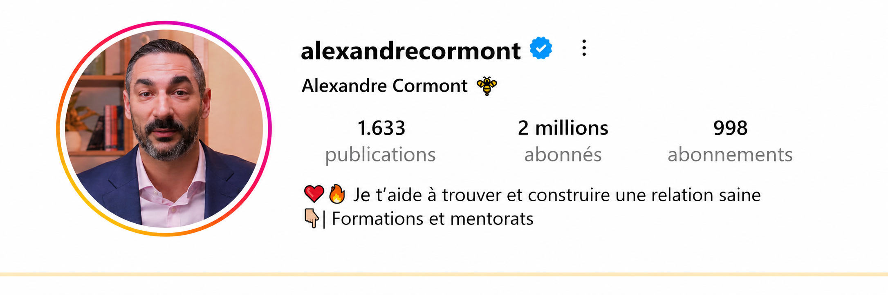
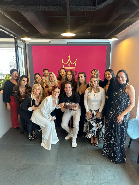

⬇️ Découvre comment faire en sorte que ton ex revienne vers toi en 60 secondes — même si elle est avec un autre mec
Utilise ce message psychologique de trois mots et elle va venir te chercher.
Peu importe si tu l'as trompée, si elle t'a bloqué ou si elle est avec un autre mec en ce moment.
Clique ici pour faire le test et débloquer ce message 👇🏻
- En plus de ce message, tu recevras un protocole de reconquête personnalisé.
- Tu découvriras quelle est l'erreur qui fait perdre leur ex pour toujours à 93 % des hommes — et comment l'éviter.
- Et tu découvriras aussi le raccourci sale pour la ramener dès les prochaines 48 heures.
Étape 1 / 6C'était quand, votre rupture ?
Étape 2 / 6Vous avez encore une forme de contact aujourd'hui ?
Étape 3 / 6Qu'est-ce qui te fait le plus mal depuis la rupture ?
Étape 4 / 6Si elle tombait vraiment amoureuse d'un autre mec, qu'est-ce qui t'arriverait ?
Étape 5 / 6Combien de temps tu penses qu'il te reste avant qu'elle t'oublie pour de bon ?
Salut, frérot !
Je m'appelle Alexandre Cormont. Et je sais exactement ce que tu traverses.
Je te dis ça parce que j'ai déjà été de l'autre côté.
J'étais amoureux d'une femme... mais avec le temps, la relation est tombée dans la routine. Je travaillais trop, j'oubliais les petits détails qui la faisaient sourire... et sans m'en rendre compte, je blessais petit à petit la femme que j'aimais le plus.
Jusqu'au jour où elle a rompu avec moi. Et à ce moment-là, j'avais l'impression que mon monde s'était écroulé.
C'est là qu'a commencé mon véritable enfer émotionnel :
J'appelais sans arrêt, j'envoyais message sur message, je restais en ligne tout le temps juste pour voir si elle avait vu mes messages...

Le pire, c'était que quand elle postait une story, j'imaginais tout de suite qu'elle sortait avec un autre. Et ça me détruisait de l'intérieur et me laissait dans des crises et des crises d'angoisse.
Et le pire... c'était quand j'étais bloqué. Là, j'allais faire un faux profil pour voir ce qu'elle postait, je demandais à mes potes de m'envoyer ce qu'elle avait posté... Et devine quoi ?
Et voilà, j'étais là, en train de pleurer, triste, sans réussir à manger, sans réussir à travailler correctement...
Je vivais dans cette angoisse sans fin, en me demandant à chaque minute :
« Est-ce qu'elle ressent encore mon absence ? »
« Est-ce qu'elle m'a déjà remplacé par un autre ? »
« Est-ce que j'appelle ? Est-ce que j'envoie un message ? »
Et la vérité, c'est que... plus je lui courais après, plus elle s'éloignait.
C'est seulement à ce moment-là que j'ai compris : le problème, c'était pas elle. Le vrai problème, c'était que je comprenais pas l'esprit féminin.
Je savais pas comment fonctionnait le désir d'une femme... et du coup, je faisais exactement l'opposé de ce qui aurait réveillé en elle l'envie de revenir.
C'est dans cette phase de douleur que j'ai compris de la pire manière possible une dure vérité :
Plus tu es disponible pour une femme, plus elle s'éloigne...
Mais au lieu d'accepter la défaite, j'ai décidé de transformer cette douleur en carburant.
Je me suis plongé à fond dans les études, j'ai cherché des réponses, j'ai parlé avec beaucoup de spécialistes et j'ai découvert quelque chose qui a changé pas seulement ma vie, mais celle de milliers d'autres personnes avec qui j'ai déjà partagé ce secret caché...
Par contre, en seulement 3 étapes, tu peux faire en sorte que n'importe quelle femme te mange dans la main à nouveau et regrette d'avoir rompu avec toi (Même si t'as fait une très grosse connerie).
Au cours des dernières années, je me suis formé en Psychanalyse, et aujourd'hui je suis Psychanalyste Clinique spécialisé en relations amoureuses et comportement humain.

Depuis que j'ai commencé à partager du contenu sur les relations amoureuses, j'ai conquis presque 2 millions d'abonnés sur l'ensemble de mes réseaux sociaux.

Et cette femme qui m'avait quitté, après avoir appliqué exactement la même technique en 3 étapes que je vais te révéler dans ce plan, est aujourd'hui ma fiancée.
Et le mieux... j'ai fondé le Club des Déesses de Haute Valeur, une méthode exclusive réservée aux femmes qui leur apprend à guérir de blessures profondes pour avoir des relations saines.
Aujourd'hui le Club compte plus de 2 800 femmes inscrites.
Mais ça m'a donné accès à TOUS les secrets les plus cachés de l'esprit féminin...
Des secrets que maintenant je vais te révéler pour que ton ex ressente à nouveau ton absence, regrette de t'avoir quitté et veuille te courir après dès cette semaine.

Touche le bouton ci-dessous pour Avancer avec le Plan ! 👇